研究二:父母教养方式对学生学业坚毅的影响：亲子依恋的中介作用
由于本研究的测量的数据均采用自我陈述法，可能存在产生共同方法偏差，因此采用Harman单因子检验法，检验共同方法偏差是否会影响实证效度。
将义务教育阶段学生父母教养方式、亲子依恋、学习坚毅这3份量表的所有项目进行未经旋转的探索性因子分析，得到9个特征值大于1的因子，其中最大因子方差解释率为31.82%，小于临界标准40%，说明本研究没有严重的共同方法偏差问题，不会影响实证效度。
义务教育阶段学生父母教养方式、亲子依恋、学习坚毅描述性统计分析结果如下表所示。
| 变量 | 维度 | 项数 | 平均值 | 标准差 | 偏度 | 峰度 | |
|---|---|---|---|---|---|---|---|
| 父母教养方式 | 拒绝 | 6 | 2.05 | 1.027 | 1.029 | 0.537 | |
| 情感温暖 | 7 | 4.09 | 0.894 | -1.288 | 1.67 | ||
| 过度保护 | 8 | 3.00 | 0.764 | 0.314 | 0.494 | ||
| 亲子依恋 | 父子依恋 | 父亲信任 | 6 | 4.01 | 0.888 | -0.965 | 0.685 |
| 父亲疏离 | 10 | 3.23 | 0.757 | 0.782 | 0.798 | ||
| 母子依恋 | 母亲信任 | 6 | 4.25 | 0.784 | -1.08 | 0.814 | |
| 母亲疏离 | 10 | 3.19 | 0.868 | 1.13 | 1.316 | ||
| 学业坚毅 | 目标明确 | 5 | 4.12 | 0.811 | -0.958 | 1.312 | |
| 持续努力 | 6 | 4.09 | 0.805 | -0.86 | 1.116 | ||
| 积极信念 | 5 | 4.17 | 0.814 | -1.12 | 1.755 | ||
| 总分 | 16 | 4.12 | 0.773 | -0.9839 | 1.66 | ||
本研究中，父母教养方式的拒绝维度均值为2.05（满分5，中间值3，以下不再说明），过度保护维度均值为3.00，情感温暖维度为4.09，说明该学生群体的父母采取消极教养方式的较少，积极教养方式较多。该学生群体在亲子依恋各维度的得分趋势较为一致，即父/母亲信任得分最高，分别为4.01、4.25分；父/母疏离得分最低，分别为3.23,
3.19；说明学生的亲子信任程度处于中上水平，亲子疏离程度处于中等水平；学业坚毅各维度均值均高于4，说明该学生群体具有较高的学业坚毅水平。
①义务教育阶段学生父母教养方式的性别差异
采用独立样本t检验分析，对父母教养方式的性别差异进行差异性统计分析。父母情感温暖、过度保护维度上在性别上并不存在显著差异（父母情感温暖t=1.037，p=0.300;过度保护：t=1.73，p=0.084），但在拒绝这一维度在性别方面存在显著差异(t=2.137，p=0.033)，女生得分显著低于男生。
| 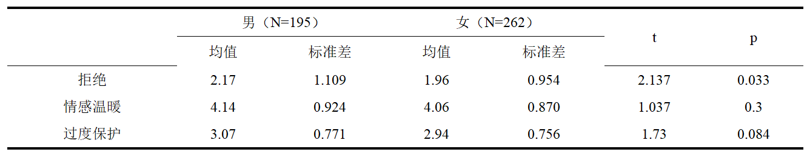 |
②义务教育阶段学生父母教养方式的年级差异
本研究采用单因素方差分析，对父母教养方式的年级差异进行差异性统计分析，发现父母教养方式在年级上并未出现显著差异。
| 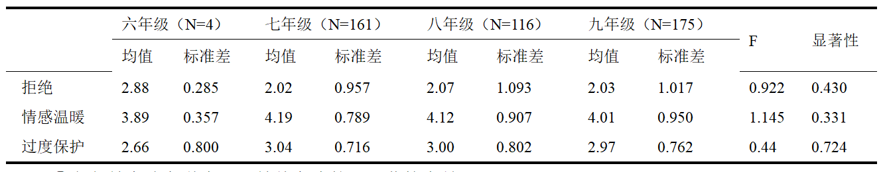 |
③义务教育阶段学生父母教养方式的主要监护人差异
本研究采用单因素方差分析，对父母教养方式的主要监护人差异进行差异性统计分析。父母教养方式中的情感温暖与过度保护维度在主要监护人方面均存在显著差异（情感温暖：F=3.388，p=0.018；过度保护：F=2.847,
p=0.037），在拒绝维度上不存在显著差异（F=1.17，p=0.321）。通过LSD方法进行事后检验可知，在情感温暖与过度保护上，父母双方共同管理孩子教育的比母亲一方管理孩子教育得分更高。
| 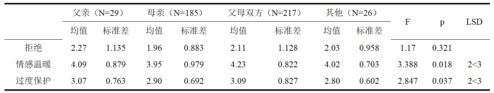 |
④义务教育阶段学生父母教养方式的学业成绩差异
本研究采用单因素方差分析，对父母教养方式的学业成绩差异进行差异性统计分析，其中学生成绩根据班级排名简单分为四个等级。父母教养方式中的拒绝与情感温暖维度在学业成绩方面均存在显著差异（拒绝：F=3.352，p=0.019；情感温暖：F=1.633,p=1.633)，在过度保护维度上不存在显著差异（F=0.757，p=0.757）。通过LSD方法进行事后检验可知，在拒绝维度上，成绩为A等的学生得分显著低于成绩为C等与D等的学生；成绩为B等的学生得分显著低于成绩为C等与D等的学生；但A等与B等、C等与D等之间差异不显著。在情感温暖上各方面维度不显著。
| 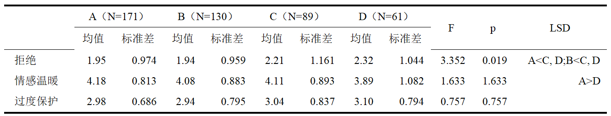 |
①义务教育阶段学生亲子依恋的性别差异
采用独立样本t检验分析，对亲子依恋的性别差异进行差异性统计分析，发现不存在显著差异。
| 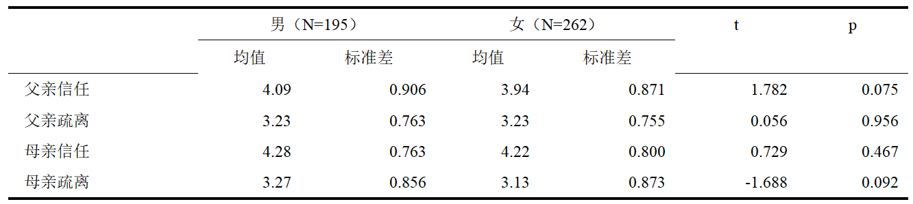 |
②义务教育阶段学生亲子依恋的年级差异
本研究采用单因素方差分析，对亲子依恋的年级差异进行差异性统计分析，其结果不显著。
| 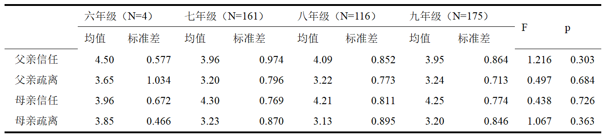 |
③义务教育阶段学生亲子依恋的主要监护人差异
本研究采用单因素方差分析，对父母教养方式的主要监护人差异进行差异性统计分析。在父子依恋中的父亲信任与父亲疏离维度在主要监护人方面均存在显著差异（父亲信任：F=8.480，p=0.0010；父亲疏离：F=3.848，p=0.010)。通过LSD方法进行事后检验可知，在父亲信任这一维度上，父母双方共同管理孩子教育的比母亲一方管理孩子教育得分更高。在父亲疏离这一维度上，母亲一方管理孩子教育得分显著高于其他几种情况。在母子依恋中的母亲疏离维度在主要监护人方面存在显著差异（母亲疏离：F=2.720，p=0.044)，在母亲信任维度上不存在显著差异（F=0.718，p=0.543）。通过LSD方法进行事后检验可知，在情感温暖与过度保护上，父母双方共同管理孩子教育的比母亲一方或父亲一方管理孩子教育得分更高。
| 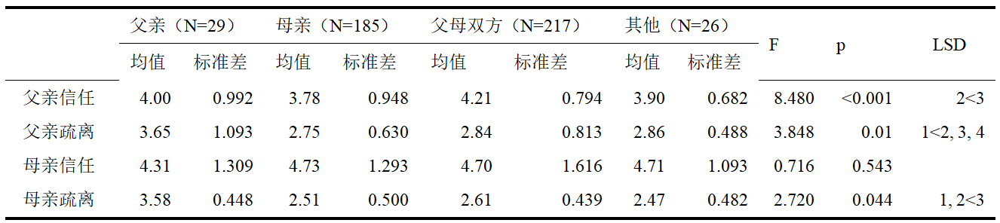 |
④义务教育阶段学生亲子依恋的学业成绩差异
本研究采用单因素方差分析，对父母教养方式的学业成绩差异进行差异性统计分析。在父子依恋中的父亲信任与父亲疏离维度在学业成绩方面均不存在显著差异（父亲信任：F=1.324，p=0.266；父亲疏离：F=1.781,p=0.150)。在母子依恋中的母亲疏离与母亲信任维度在学业成绩方面均存在显著差异（母亲疏离：F=3.843,p=0.010；母亲信任：F=3.355，p=0.019）。通过LSD方法进行事后检验可知，成绩为A等的学生在母亲信任与母亲疏离上得分均显著高于成绩为C等以及D等的学生，成绩为B等的学生在母亲疏离上得分均显著高于成绩为C等以及D等的学生。
| 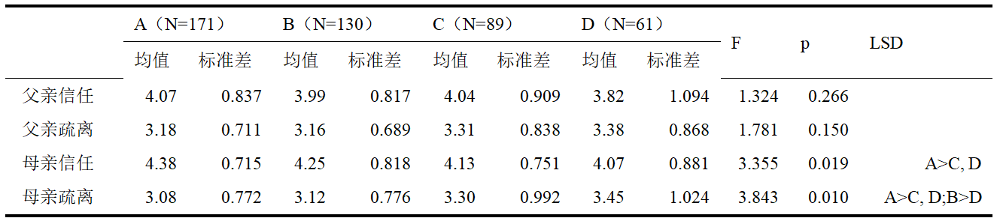 |
①义务教育阶段学生学业坚毅的性别差异
采用独立样本t检验分析，对学业坚毅的性别差异进行差异性统计分析，结果均不存在差异。
| 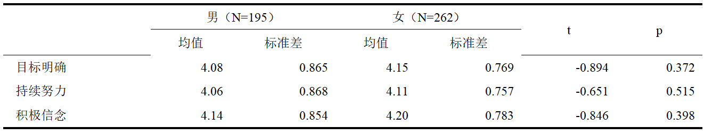 |
②义务教育阶段学生学业坚毅的年级差异
本研究采用单因素方差分析，对学业坚毅的年级差异进行差异性统计分析，结果均不存在差异。
| 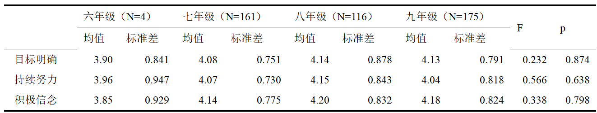 |
③义务教育阶段学生学业坚毅的主要监护人差异
本研究采用单因素方差分析，对学业坚毅的主要监护人差异进行差异性统计分析，结果均不存在差异。
| 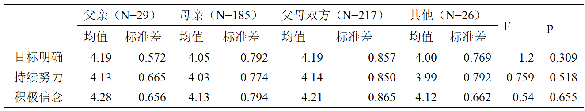 |
④义务教育阶段学生学业坚毅的学业成绩差异
本研究采用单因素方差分析，对学业坚毅的学业成绩差异进行差异性统计分析。学业坚毅各维度在学业成绩方面均存在显著差异（目标明确：F=6.502,p=0.001；持续努力：F=6.608,p=0.001；积极信念：F=5.871,p=0.001）。通过LSD方法进行事后检验可知，成绩为A等的学生在目标明确与持续努力上得分均显著高于成绩为B等、C等以及D等的学生，在积极信念上得分均显著高于成绩为B等以及D等的学生。
| 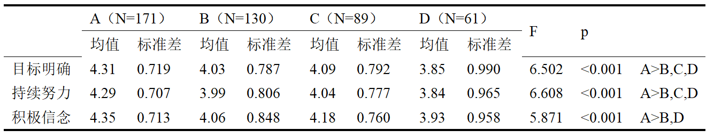 |
采用皮尔逊相关分析法对中学生学业坚毅、中学生父母教养方式和亲子依恋三个变量以及各个维度之间的相关性进行分析。首先验证各维度是否符合正态性。对学生父母教养方式、亲子依恋、学习坚毅间各维度采用柯尔莫戈洛夫-斯米诺夫方法进行正态性检验，各个维度均符合满足正态性。在父母教养方式中，拒绝与亲子依恋以及学业坚毅各维度成显著负相关；过度保护与父亲疏离、母亲疏离呈显著负相关，与父亲信任呈正相关，与母亲信任的相关性不显著，与学业坚毅各维度呈现负相关；情感温暖与亲子依恋以及学业坚毅各维度成显著正相关。亲子依恋各维度与学业坚毅各维度成显著正相关。
| 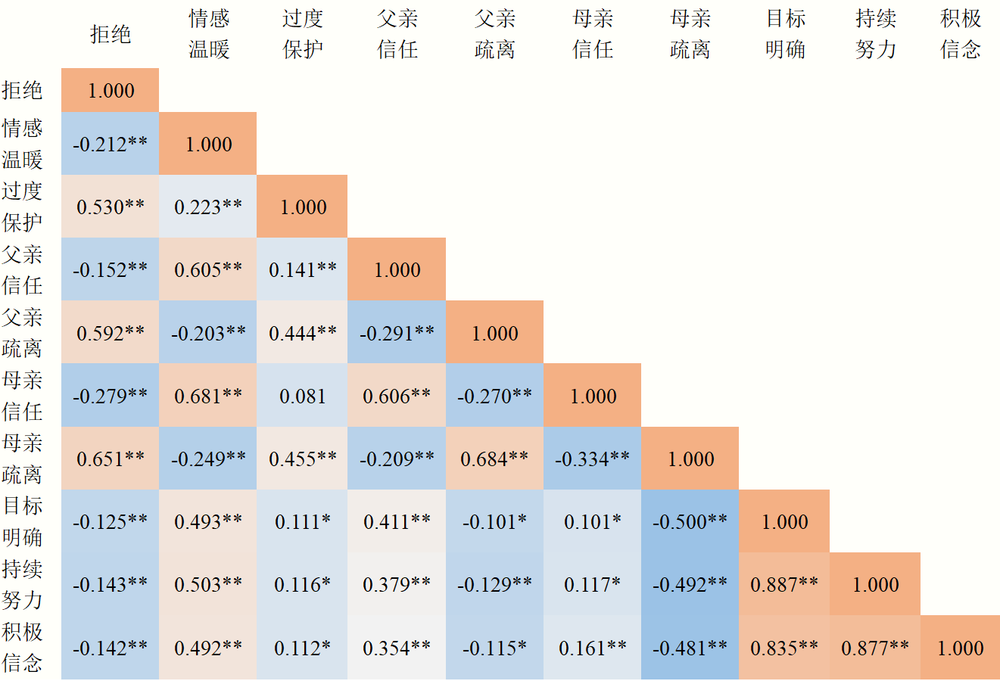 |
采用皮尔逊相关分析法对中学生学业坚毅、中学生父母教养方式和亲子依恋三个变量以及各个维度之间的相关性进行分析。首先验证各维度是否符合正态性。对学生父母教养方式、亲子依恋、学习坚毅间各维度采用柯尔莫戈洛夫-斯米诺夫方法进行正态性检验，各个维度均符合满足正态性。在父母教养方式中，拒绝与亲子依恋以及学业坚毅各维度成显著负相关；过度保护与父亲疏离、母亲疏离呈显著负相关，与父亲信任呈正相关，与母亲信任的相关性不显著，与学业坚毅各维度呈现负相关；情感温暖与亲子依恋以及学业坚毅各维度成显著正相关。亲子依恋各维度与学业坚毅各维度成显著正相关。
| 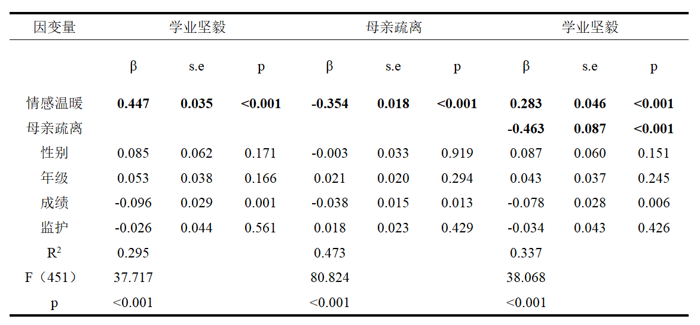 |
由于父母教养方式在回归分析中只有情感温暖维度对学业坚毅的预测显著，以父母教养方式中的父母情感温暖为自变量，性别、年级、成绩、主要监护人作为控制变量，分别亲子依恋的不同维度为中介变量，中学生学业坚毅为因变量进行分析，检测亲子依恋能父母教养方式力在对中学生学业坚毅之间的中介效应。
在控制变量下，情感温暖对学业坚毅（β=0.447，p=0.001）和父亲信任（β=0.590，p=0.001）的直接预测作用显著；加入中介变量父亲信任时，父亲信任对学业坚毅（β=0.120，p=0.001）的预测作用显著，情感温暖对学业坚毅（β=0.376，p=0.001）的预测作用仍然显著。因此父亲信任在情感温暖在学业坚毅可能有着部分中介作用。Boopsprap检验表明，95%置信区间为[0.005，0.137]，不包含0，部分中介效应显著，占总效应的15.88%。中介效应路径如图所示。
| 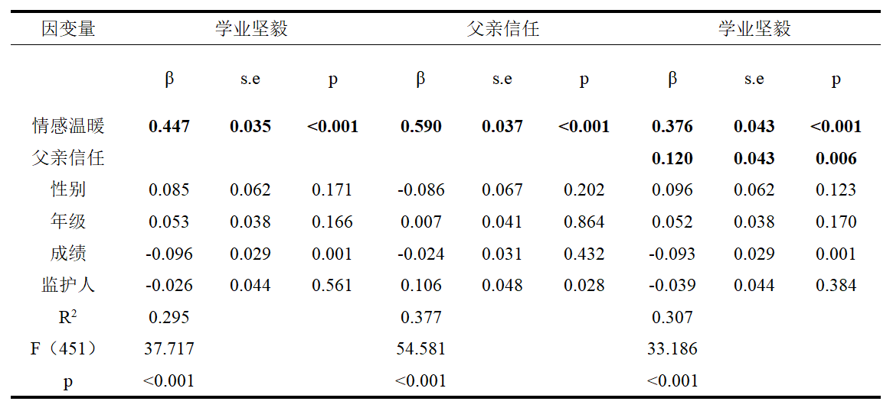 |
| 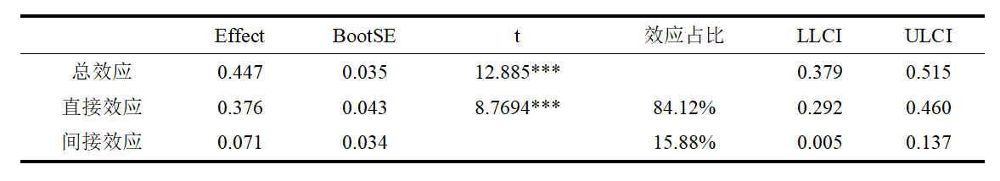 |
| 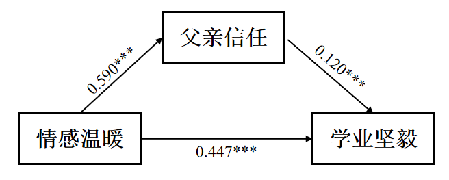 |
在控制变量下，情感温暖对学业坚毅（β=0.447，p=0.001）和父亲疏离（β=-0.156，p=0.001）的直接预测作用显著；加入中介变量父亲疏离时，父亲疏离对学业坚毅（β=0.446，p=0.001）的预测作用显著，情感温暖对学业坚毅（β=0.283，p=0.001）的预测作用仍然显著。因此父亲疏离在情感温暖在学业坚毅可能有着部分中介作用。Boopsprap检验表明，95%置信区间为[-0.017，0.019]，包含0，部分中介效应不显著。
| 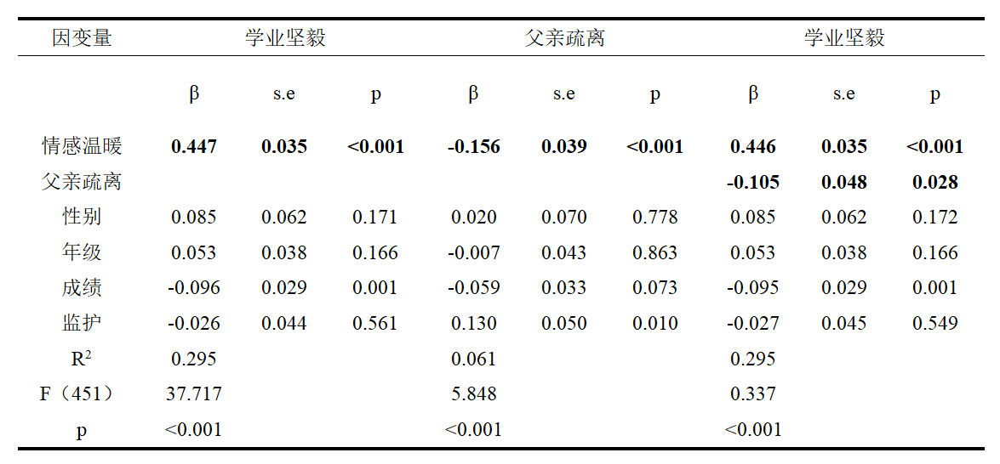 |
| 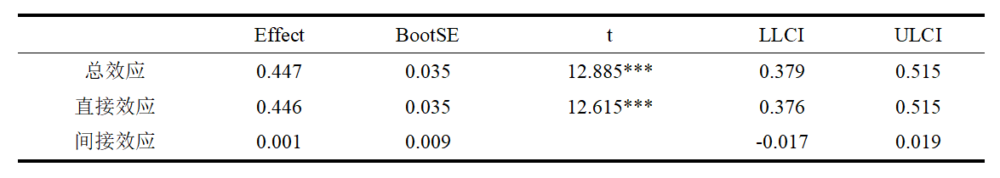 |
在控制变量下，情感温暖对学业坚毅（β=0.447，p=0.001）和母亲信任（β=0.394，p=0.001）的直接预测作用显著；加入中介变量母亲信任时，母亲信任对学业坚毅（β=0.056，p=0.001）的预测作用显著，情感温暖对学业坚毅（β=0.452，p=0.001）的预测作用仍然显著。因此母亲信任在情感温暖在学业坚毅可能有着部分中介作用。Boopsprap检验表明，95%置信区间为[-0.028，0.019]，包含0，部分中介效应不显著。
| 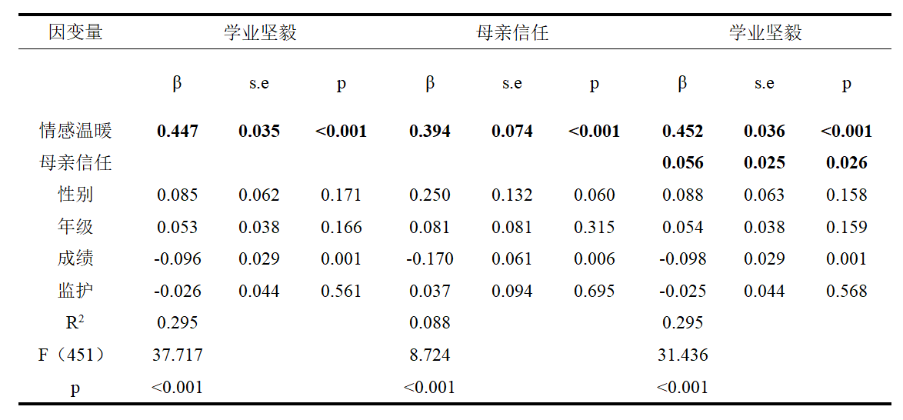 |
| 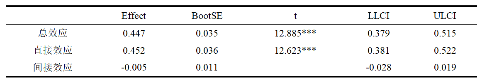 |
在控制变量下，情感温暖对学业坚毅（β=0.447，p=0.001）和母亲疏离（β=-0.354，p=0.001）的直接预测作用显著；加入中介变量母亲疏离时，母亲疏离对学业坚毅（β=-0.463，p=0.001）的预测作用显著，情感温暖对学业坚毅（β=0.283，p=0.001）的预测作用仍然显著。因此母亲疏离在情感温暖在学业坚毅可能有着部分中介作用。Boopsprap检验表明，95%置信区间为[0.076，0.242]，不包含0，部分中介效应显著，占总效应的36.69%。中介效应路径如图所示。
| 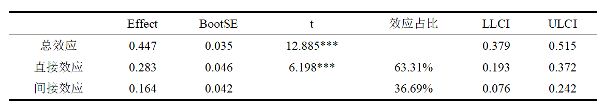 |
| 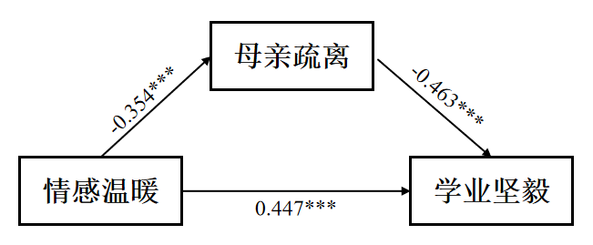 |